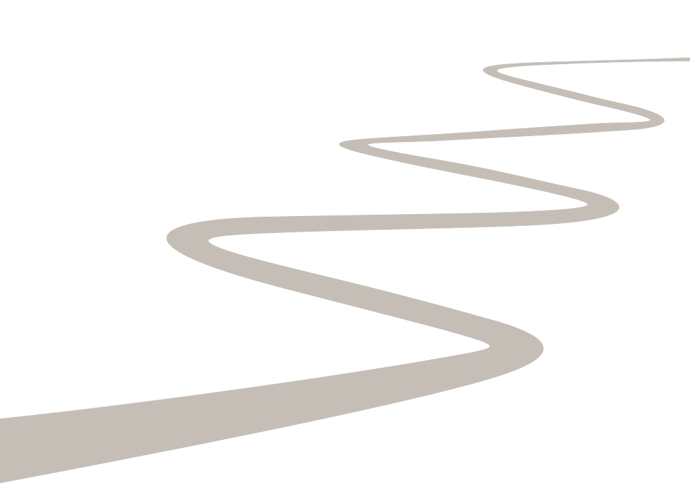

Doors
John Samuel
Home
Travel
Doors
Belgium
Antwerpen
Bruges
Bruges
Finland
Helsinki
France
Haut-Biol
La Chapelle de la Tour
Italy
Florence
Pisa
Pisa
Rome
Rome
Portugal
Braga
Braga
Braga
Guimarães
Porto
Porto
Porto
Porto

 Antwerpen
Antwerpen Bruges
Bruges Bruges
Bruges Helsinki
Helsinki Haut-Biol
Haut-Biol La Chapelle de la Tour
La Chapelle de la Tour Florence
Florence Pisa
Pisa Pisa
Pisa Rome
Rome Rome
Rome Braga
Braga Braga
Braga Braga
Braga Guimarães
Guimarães Porto
Porto Porto
Porto Porto
Porto Porto
Porto